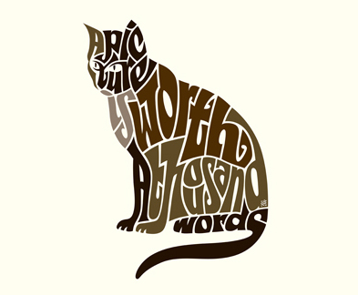

My name is Marissa Saidy. I am currently a senior at Eastern Washington University and my major is Visual Communication Design with a mior in art. I am interested in web design because I would like to be part of user inter face design in companies and create something that everyone can use. The reason I am interested in graphic design because I want to design things for the greater community instead of self profit like art.
The most recent music I have listend to is a remix of a game's OST(orginal soundtrack) Undertale and American Beauty/American Psycho album from Fall Out Boy. I mainly listen to remixes, EDM, pop, and Punk music. My favorite book series is the Percy Jackson and the Olympians. I love the mesh of modern day and Greek mythology that the book illustrates.
My hobbies include drawing, digital and tradtional, video games, rpg's mostly and MOBAs(multiplayer online battle area) and sometimes reading, if I get the chance. I also like to play badmittion when I try to get exercise in and I love to travel and I love cats.
